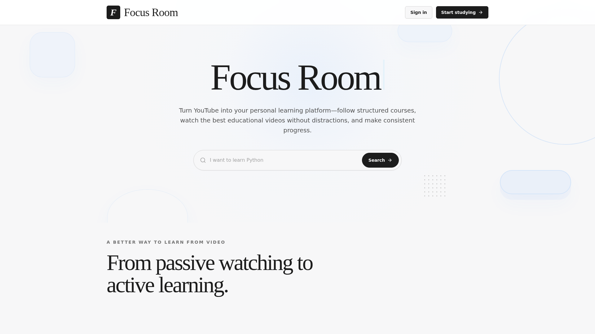
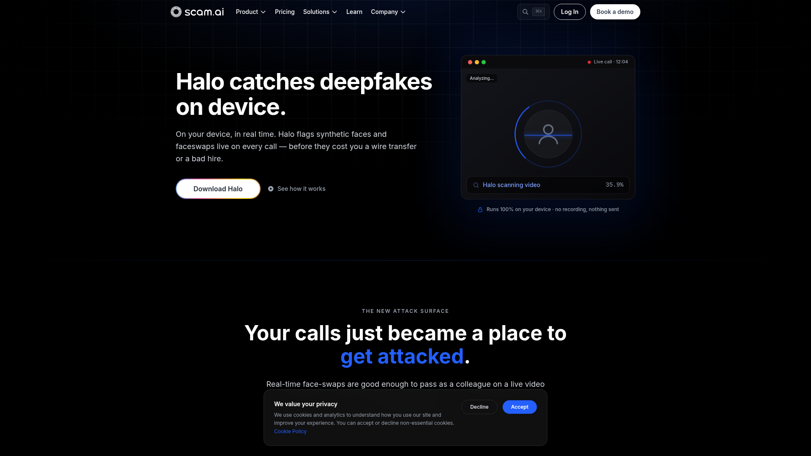
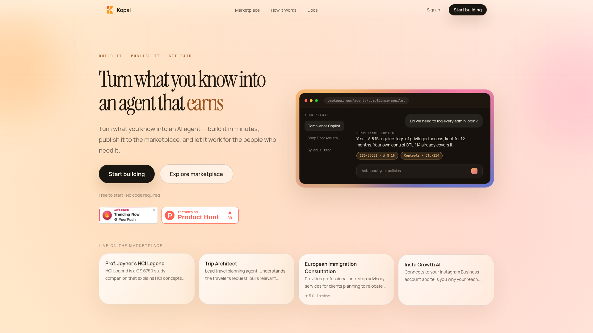
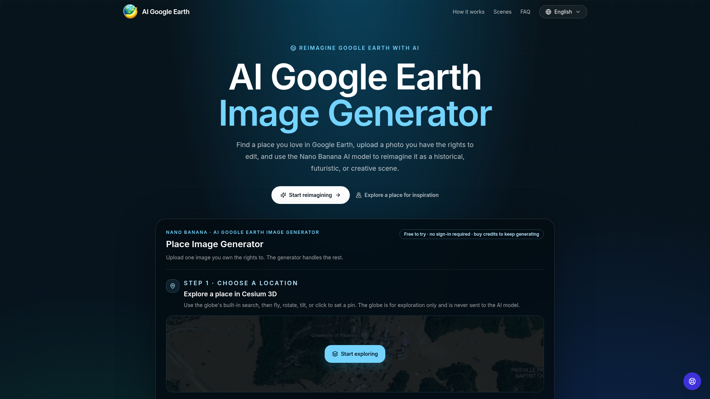
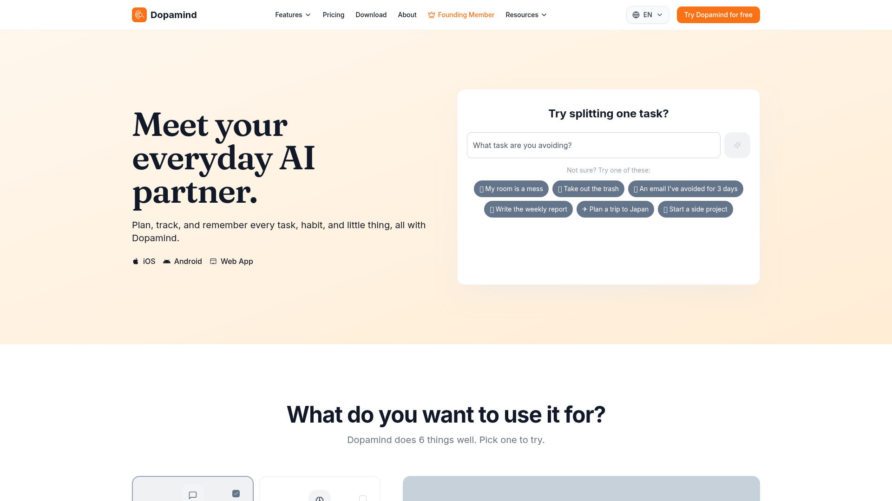

8月2日 周日

Focus Room - 把 YouTube 变成个人学习平台
Focus Room 是一个将 YouTube 播放列表转化为结构化课程的学习平台。它去除广告、评论、推荐视频等干扰元素，支持字幕搜索、时间戳笔记、书签收藏、进度追踪，并用 AI 生成视频摘要，帮助你把被动刷视频变成主动系统化学习。

Halo by Scam AI - 视频通话实时深度伪造检测
Halo 是一款在 Windows 上运行的实时深度伪造检测工具：它逐帧分析视频通话中的人脸，检测合成面孔和换脸攻击，在 Zoom、Teams、Meet、WebEx 等会议进行中实时弹出警报。所有检测都在本地设备完成，不录制、不上传、不留存任何画面数据。

Kopai - AI 智能体知识变现市场
Kopai 是一个零代码 AI 智能体市场：专家用自然语言描述自己擅长的领域并上传文档资料，几分钟内即可构建出「像自己一样回答问题」的专属智能体，一键发布到 marketplace 按消息收费，让专业知识 7×24 小时自动变现。

AI Google Earth - 地图照片 AI 风格改写工具
AI Google Earth 是一个用 AI 改写 Google Maps 地标照片风格的在线工具。作者发现 Google Earth 官方的「用 Nano Banana 改地点照片风格」体验入口悄然消失，便自己复刻了一个：选择或上传地点照片，即可用 AI 生成插画风、赛博朋克风等不同风格的建筑街

Dopamind - 为 ADHD 人群设计的 AI 规划助手
Dopamind 是一款专为 ADHD 人群设计的 AI 任务规划应用：语音一句话记录想法，AI 自动拆解成可执行的小步骤；独创「Vibe Working」心流专注模式，用番茄钟加 AI 鼓励推动执行；可视化多巴胺反馈把完成任务变成游戏化体验。内置药物与补剂提醒、冰箱食物保质期管理等生活管家功能。